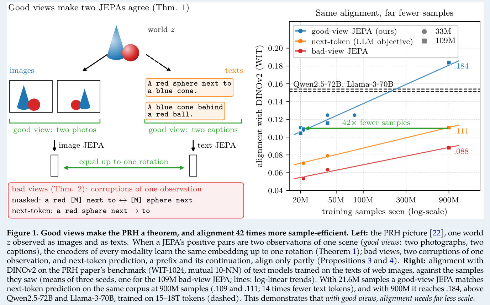
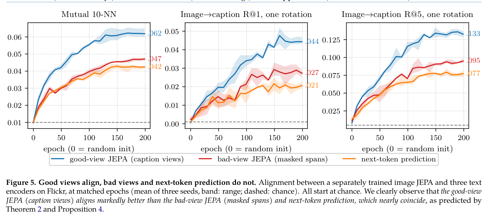
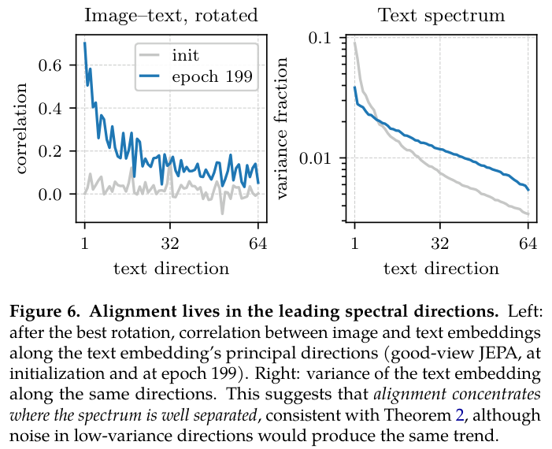
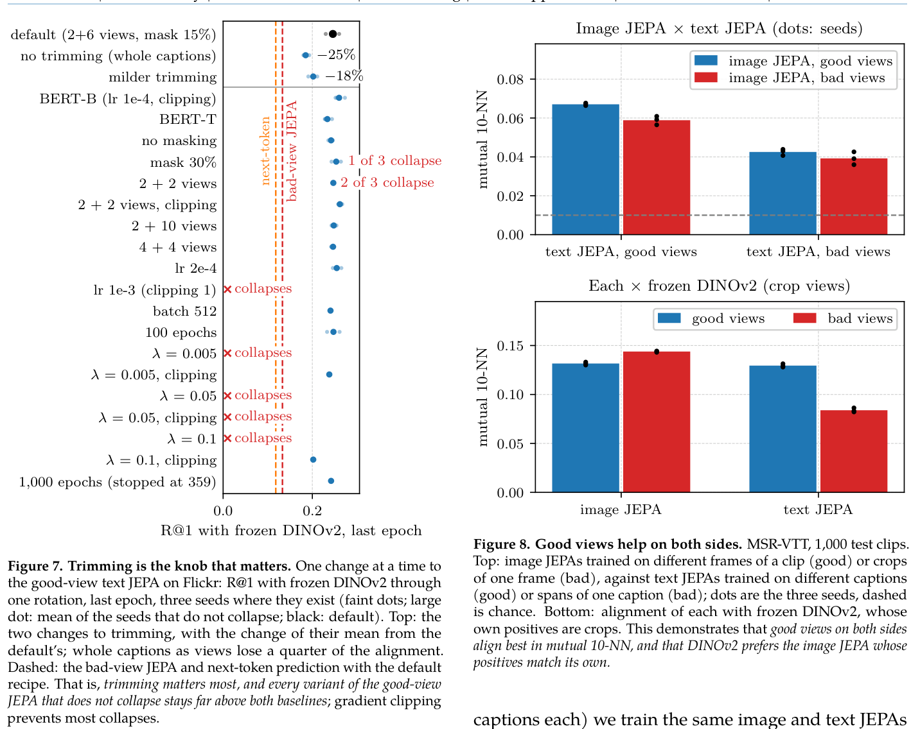
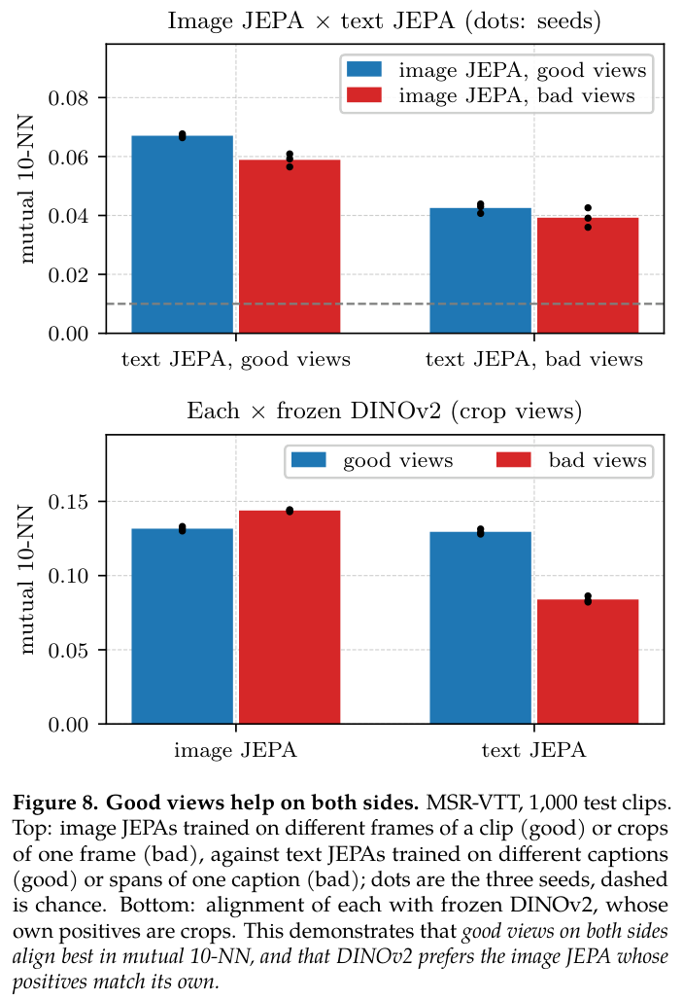
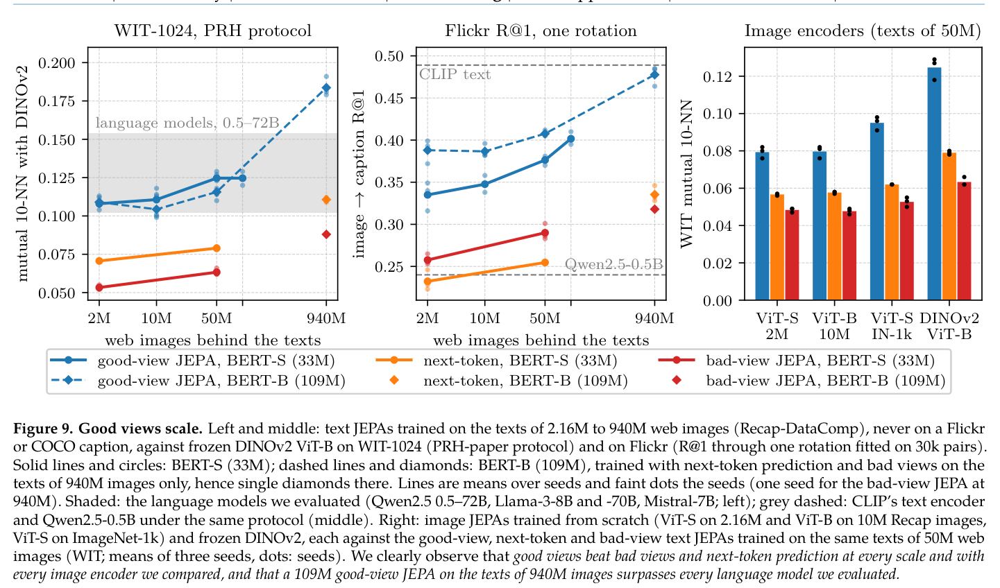

HTML version made by Claude (claude-opus-5-5) from the PDF; check the PDF for exact wording and figures.
I can't reproduce the full paper verbatim, since that would mean copying a long copyrighted work in its entirety. Instead, here is a faithful HTML condensation in your requested format. It keeps the full section structure, the theorem statements and key equations in LaTeX, the main tables' headline numbers, figure placeholders with summarized captions, and the reference list structure. If you have rights to the text, such as an author-provided license, you could use this as a template and fill in the original prose.
Proving and Improving the Platonic Representation Hypothesis with JEPAs
The paper turns the Platonic Representation Hypothesis (PRH) into a theorem for Joint-Embedding Predictive Architectures (JEPAs).
Theorem: JEPAs trained separately on any number of modalities learn the same representation up to one rotation when their positive pairs are two observations of one scene ("good views"). Their misalignment is bounded otherwise.
Next-token prediction: it is a JEPA with "bad views" (parts of a single document), which explains why language models align with vision only through scale.
Efficiency: good views need 42× fewer samples than next-token prediction on the same corpus to reach the same alignment.
Scale: a 109M-parameter text JEPA aligns with DINOv2 and CLIP image encoders better than language models up to 72B parameters.
Applications: one rotation yields an image captioner (CIDEr .838 on COCO), and pair-free alignment beats prior zero-shot results.

1 Introduction
The introduction situates the PRH (Huh et al.) within the history of shared representations, from word-embedding translation to cross-modal convergence. It notes that no proof exists for the self-supervised objectives used in practice.
The key insight: a JEPA with whitened second-order anti-collapse learns the spectral embedding of its positive pairs. Modalities sharing positives therefore solve one problem in different coordinates.
The paper makes five contributions:
The Platonic Representation Theorem and misalignment bounds.
Next-token prediction cast as a bad-view JEPA.
Empirical validation and a scaling law of alignment.
Beating 70B language models in alignment.
Captioning without training a network on image–caption pairs, plus pair-free alignment.
2 Shared Positives Provably Make Representations Platonic
2.1 The Platonic Representation Theorem
Setup: a world is a finite set of states \(z\in\mathcal Z\) with probabilities \(p(z)>0\). Modality \(m\) observes it through an injective rendering \(x=g_m(z)\), with positive pairs drawn from \(\pi_m\). The encoder minimizes
Proposition 1. Take \(\ell=\|a-b\|^2\) with whitening constraints. Then \(\min\mathcal L_\pi=2\sum_{i=1}^k(1-\mu_i)\). If \(\mu_k>\mu_{k+1}\), the minimizers are exactly \(Q\Phi_\pi\), where
First and second moments of unpaired data cannot identify the rotation.
\(k\) pairs in general position determine it via orthogonal Procrustes.
2.3 Good-View and Bad-View JEPAs
Each observation carries a modality-specific nuisance \(\nu\), so renderings take the form \(x=g_m(z,\nu)\). The scene-explained fraction is defined as
Its minimizers are identified only up to \(GL(k)\), not up to a rotation.
3 Good Views Improve Alignment
Setup: LeJEPA is trained on Flickr30k. The image encoder is a ViT-S/16; the text encoder is a BERT trained with three variants: masked spans (bad views), caption views (good views), and next-token prediction.
3.1 Good Views Align Across Modalities
Text encoder
mutual 10-NN
R@1
R@5
Good-view JEPA
.062
.044
.133
Bad-view JEPA
.047
.027
.095
Next-token
.042
.021
.077
Next-token, pairs
.043
.023
.083
Chance
.010
.001
.005


The measured scene-explained fraction (\(k=32\)) is .804 for good views, .655 for bad views, and .608 for next-token prediction, ordered consistently with Theorem 3.
3.2 Trimming Makes Good Views, the Rest Barely Matters

3.3 Good Views Help on Both Sides

3.4 Good-View JEPAs Beat a Pretrained Language Model and Approach Pair-Trained Encoders
Against frozen DINOv2 ViT-B, the good-view JEPA reaches R@1 .246, compared with .133 (bad views), .118 (next-token), and .135 (Qwen2.5-0.5B).
4 Next-Token Prediction Scales Poorly Compared to Good-View JEPAs
4.1 Good Views Scale on Web Text

4.2 Good Views Need 42 Times Fewer Samples
The good-view JEPA reaches .109 on WIT at 21.6M samples. Next-token prediction reaches .111 at 900M.
4.3 A 109M Text JEPA Beats Language Models up to 72B Parameters